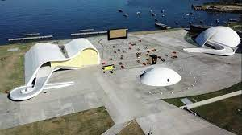
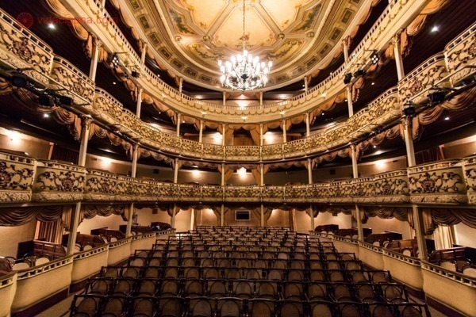
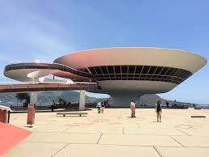

Niterói é a 15ª cidade mais empreendedora do Brasil. O dado é do Índice de Cidades Empreendedoras (ICE), realizado pela consultoria Endeavor em parceria com a Escola Nacional de Administração Pública (Enap), e foi divulgado na última quinta-feira (28). Foram analisados os cenários das 100 cidades mais populosas do país, avaliando as condições relacionadas a ambiente regulatório, infraestrutura, mercado, acesso a capital, inovação, capital humano e cultura empreendedora, contendo 70.324 empresas ativas.
Prefeitura vem desenvolvendo programas para alavancar novos negócios, principalmente no contexto pós-pandemia, além de projetos que têm como foco o maior desenvolvimento da cidade.
Ele ressalta que as conquistas alcançadas nos últimos anos são pautadas em uma gestão responsável tendo o planejamento estabelecido para a cidade através do Plano “Niterói que Queremos”, que estabeleceu um projeto de cidade com um horizonte para o ano de 2033.
Para mais informações acessem o link
O Caminho Niemeyer é o primeiro ponto turístico a aparecer sempre ao listar o que fazer em Niterói. O conjunto arquitetônico e cultural se estende desde o Centro de Niterói até o bairro de Icaraí. O complexo concentra edificações belíssimas desenvolvidas pelo arquiteto brasileiro mais consagrado mundialmente, Oscar Niemeyer.
O Caminho Niemeyer pode ser percorrido sem guia pelos turistas. Só é necessário ter uma peço atenção ao percurso, pois é preciso passar por algumas regiões desertas e precaução em Niterói, assim como em todo o Rio de Janeiro, nunca é demais.
Ao longo dos anos o edifício passou por muitas reformas e em 1842 foi adquirido pelo ator João Caetano. Após um processo de revitalização, foi renomeado como Teatro Santa Tereza, em homenagem a imperatriz brasileira da época.
Hoje, o teatro leva o nome de João Caetano e traz em sua bagagem milhares de apresentações de todos os estilos. Sua arquitetura neoclássica é de autoria de Thomas Driendl e o pano de boca do palco foi restaurado depois pelo paisagista Roberto Burle Marx.
O MAC faz parte do roteiro das obras projetadas por Oscar Niemeyer na cidade, mas o maior ponto turístico de Niterói merece um tópico dedicado somente para ele. Afinal, o MAC é o grande símbolo de Niterói e uma das obras arquitetônicas mais emblemáticas do Brasil.
Com um formato que lembra um disco voador, o Museu de Arte Contemporânea de Niterói na verdade simboliza uma rosa nascendo no concreto. Localizado no Mirante da Boa Viagem, o MAC possui um acervo com mais de 1,2 mil obras de arte e oferece uma vista magnífica de toda a entrada da Baía de Guanabara. É um passeio imperdível!
Niterói conta com muitos outros pontos turístico em seu mapa diversos passaeios que irão te surpreender, para olhar mais 17 pontos acessem o link